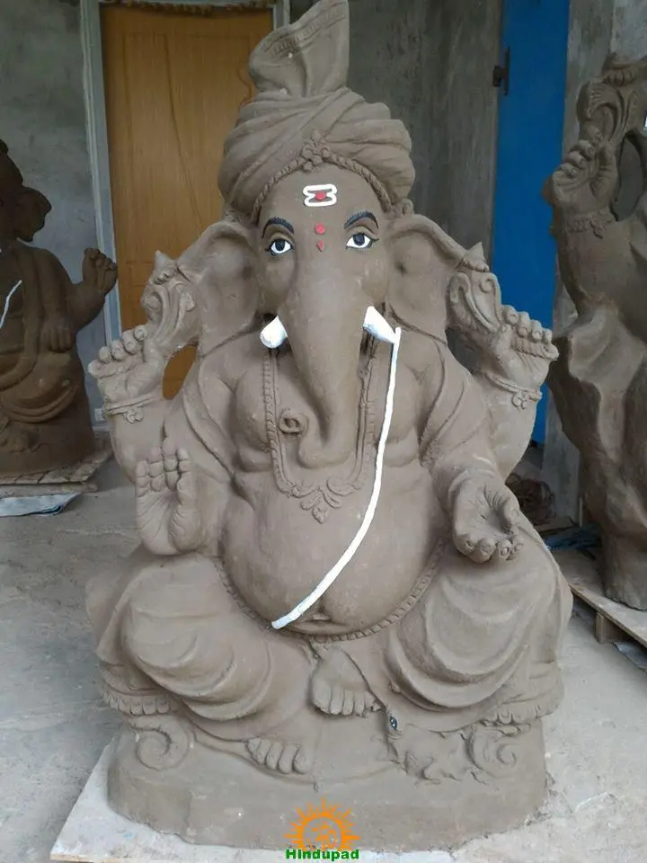
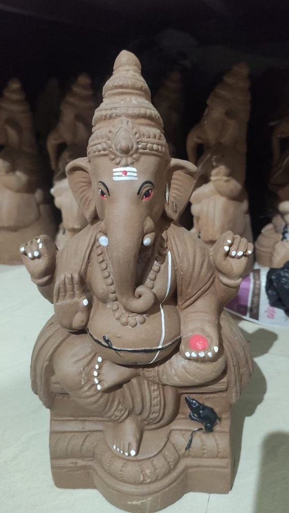

Welcome to Kondapalli Ganesh Idols
Eco-friendly clay toys made using traditional Kondapalli craftsmanship. Safe for nature and perfect for festivals.



About Us
We are Kondapalli artisans crafting handmade clay idols using eco-friendly materials while preserving our cultural heritage.
Our Location
Kummari Bazar, Kondapalli, NTR District, Andhra Pradesh, India